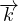
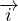
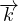
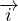
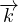
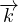
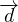
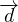
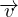
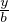

Ruumivektoriks nimetatakse kolmemõõtmelises ruumis asuvat vektorit, mis on määratud kahe punkti A(x1,y1,z1) ja B(x2,y2,z2) poolt nii, et
Ruumivektori  pikkus
pikkus
kus a1, a2, a3 on vektori komponendid.
Tasandi normaaliks nimetatakse tasandiga risti olevat sirget.
Punkti koordinaati ehk asukohta ruumis kirjeldab arvukolmik (x,y,z), kus x,y,z tähistavad punkti kaugust koordinaatide alguspunktist mööda vastavaid telgi. Näiteks punkt asukohaga (2,3,4) tähistab, et vastava punkti leidmiseks tuleb minna x-telge mööda nullpunktist 2 ühikut positiivses suunas, y-telge mööda 3 ühikut positiivses suunas ja z-telge mööda 4 ühikut positiivses suunas.

Punkti A kohavektoriks nimetatakse vektorit, mis ühendab koordinaatide
alguspunkti punktiga A. Punkti kohavektori koordinaadid on samad, mis punkti
koordinaadid.
Kahe punkti A(x1,y1,z1) ja B(x2,y2,z2) vaheline kaugus ruumis leitakse
valemiga
Punkti A(x1,y1,z1) kaugus tasandist Ax + By + Cz + D = 0 leitakse
valemiga
Kolmemõõtmelises ruumis vektori on analoogne kahemõõtmelises ruumis oleva vektoriga. Kui meil on kaks punkti A = (x1;y1;z1) ja B = (x2;y2;z2), siis vektor
lineaartehted vektoritega
Kui meil on vektorid  = (x1; y1)
ja
= (x1; y1)
ja  = (x
2; y2),
siis nende summa on
= (x
2; y2),
siis nende summa on
ja nende vahe on
Vektoreid võime korrutada ka skalaariga, sellisel juhul
 c = (cx1;cy1).
c = (cx1;cy1).
kollineaarsus ja komplanaarsus
Vektorid  = (x1; y1)
ja
= (x1; y1)
ja  = (x
2; y2)
on kollineaarsed kui nende vahel kehtib seos
= (x
2; y2)
on kollineaarsed kui nende vahel kehtib seos
 k =
k =
 , kus k
on mingi on nullist erinev reaalarv. Teisisõnu, kollineaarsete vektorite koordinaadid
on võrdelised.
, kus k
on mingi on nullist erinev reaalarv. Teisisõnu, kollineaarsete vektorite koordinaadid
on võrdelised.
Vektorid on komplanaarsed, kui nad asuvad samal tasandil või tasanditel, mis on
paralleelsed. Ruumi kolm vektorit (x1;y1;z1),(x2;y2;z2) ja (x3;y3;z3)on
komplanaarsed, kui determinant
on võrdne nulliga. Kui me tahame seda kontrollida ainult kahe vektori jaoks, siis tuleb lihtsalt ühte vektorit kasutada kaks korda.
vektori avaldamine
Vektoreid saab avaldada ka teiste vektorite (n.-ö. baaside abil).
Näiteks kui meil on kolm vektorit  ,
,
 ja
ja
 ,
siis saame avaldada suvalise ristkordinaadistikus asuva vektori
,
siis saame avaldada suvalise ristkordinaadistikus asuva vektori
 = (x1; y1; z1)
vektorite
= (x1; y1; z1)
vektorite  ,
,
 ja
 abil kui
x1  +
y1
ja
 abil kui
x1  +
y1  +
z1  .
+
z1  .
Näiteks, kui meil on vektor  = (0;5;0),
siis  =
5
= (0;5;0),
siis  =
5  kui
kui
 = (1;0;0),
= (1;0;0),
 = (0;1;0) ja
= (0;1;0) ja
 = (0;1;1).
= (0;1;1).
Me saame mistahes ruumivektorit avaldada kolme mistahes mittekomplanaarse vektori abil.
vektorite skalaarkorrutis
Vektorite  ja
ja  skalaarkorrutis on
skalaarkorrutis on

Kui |  | on
vektori
| on
vektori  pikkus, siis
pikkus, siis
Samuti, kahe vektori  ja
ja  puhul kehtib
puhul kehtib
kus θ on vektorite vaheline nurk. Vektorite vahelist nurka saabki leida, kui ülaltoodud avaldist teisendada, nimelt
millest

sirge võrrand Kui sirge on määratud kahe punkti A(x1,y1,z1) ja B(x2,y2,z2) poolt, siis sirge võrrandid on
tasandi võrrand Kui tasand läbib punkti P(x1,y1,z1) ja on risti vektoriga  = (A;B;C), siis tasandi võrrand on esitatav kujul
Tasandi üldvõrrand esitub kujul:
Kui tasand lõikab koordinaattelgi punktides A(a,0,0) ja B(0,b,0) ja C(0;0;c), siis tasandi võrrand esitub kujul +  + = 0.
omadused Kaks tasandit on paralleelsed, kui nende tasandite vastavad normaalvektorid on kollineaarsed. Sellest tuleneb, et tasandid A1x + B1y + C1z + D1 = 0 ja A2x + B2y + C2z + D2 = 0 on paralleelsed, kui kehtib
Kaks tasandit A1x + B1y + C1z + D1 = 0 ja A2x + B2y + C2z + D2 = 0 on risti,
kui

Kaks tasandit A1x + B1y + C1z + D1 = 0 ja A2x + B2y + C2z + D2 = 0 ühtivad, kui
võrrandite abil nurga leidmine
Kahe tasandi A1x + B1y + C1z + D1 = 0 ja A2x + B2y + C2z + D2 = 0 vaheline
nurk α leitakse valemiga:
Sirge on paralleelne tasandiga, kui sirge sihivektor on risti tasandi normaalvektoriga
ja sirget määrav punkt ei asetse tasandil.
Sirge ja tasand lõikuvad, kui sirge sihivektor ei ole risti tasandi normaalvektoriga.
Sirge asub tasandil, kui sirget määrav punkt asub tasandil ja sirge sihivektor on
risti tasandi normaalvektoriga.